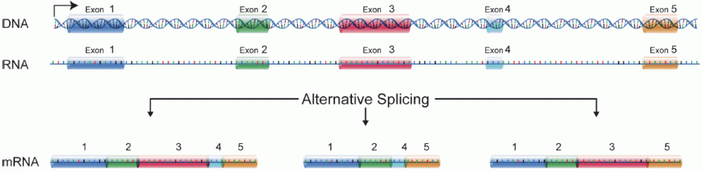
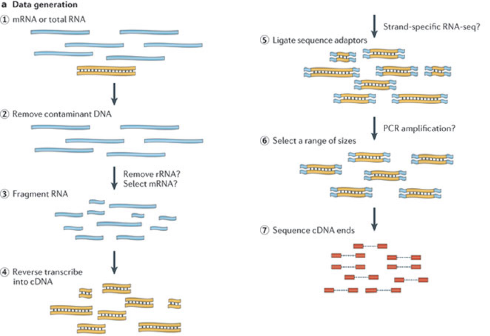
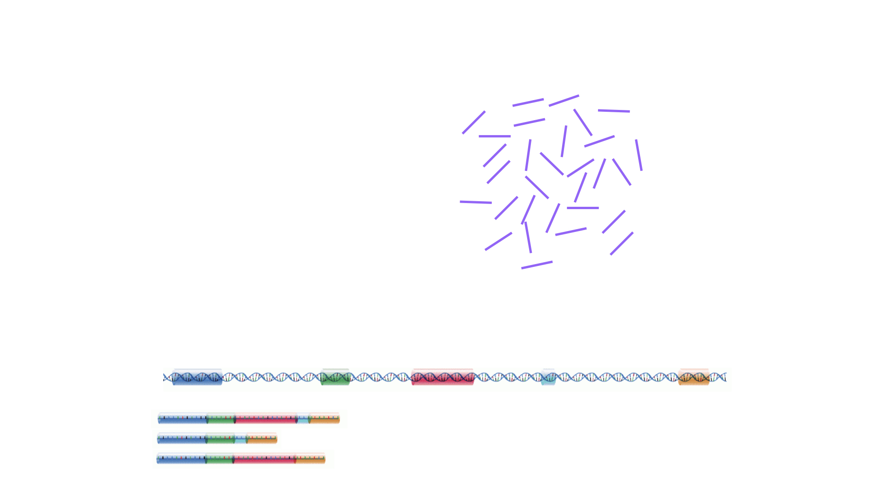

graph TD A[Count Matrix] --> B B[QC and Exploration] --> C C[Normalization] --normalized counts--> D D[Differential Expression] --gene sets--> E E[Annotation of Gene Sets]
RNAseq Concepts
This section covers some basics of the RNA-seq process, including how we go from making an RNA-seq library to making a count matrix.
What are we measuring in an RNA-seq experiment?

In order to produce an RNA molecule, a stretch of DNA is first transcribed into mRNA. Subsequently, intronic regions are spliced out, and exonic regions are combined into different isoforms of a gene.

(figure adapted from Martin & Wang (2011)).
In a typical RNA-seq experiment, RNA molecules are first collected from a sample of interest. After a potential enrichment for molecules with polyA tails (predominantly mRNA), or depletion of otherwise highly abundant ribosomal RNA, the remaining molecules are fragmented into smaller pieces (there are also long-read protocols where entire molecules are considered, but those are not the focus of this lesson).
It is important to keep in mind that because of the splicing excluding intronic sequences, an RNA molecule (and hence a generated fragment) may not correspond to an uninterrupted region of the genome.
The RNA fragments are then reverse transcribed into cDNA, whereafter sequencing adapters are added to each end.
These adapters allow the fragments to attach to the flow cell.
Once attached, each fragment will be heavily amplified to generate a cluster of identical sequences on the flow cell.
The sequencer then determines the sequence of the first 50-200 nucleotides of the cDNA fragments in each such cluster, starting from one end, which corresponds to a read.
Many data sets are generated with so called paired-end protocols, in which the fragments are read from both ends.
Millions of such reads (or pairs of reads) will be generated in an experiment, and these will be represented in a (pair of) FASTQ files.
Each read is represented by four consecutive lines in such a file: first a line with a unique read identifier, next the inferred sequence of the read, then another identifier line, and finally a line containing the base quality for each inferred nucleotide, representing the probability that the nucleotide in the corresponding position has been correctly identified.
RNA-seq quantification: from reads to count matrix

The read sequences contained in the FASTQ files from the sequencer are typically not directly useful as they are, since we do not have the information about which gene or transcript they originate from.
Thus, the first processing step is to attempt to identify the location of origin for each read, and use this to obtain an estimate of the number of reads originating from a gene (or another features, such as an individual transcript).
This can then be used as a proxy for the abundance, or expression level, of the gene.
There is a plethora of RNA quantification pipelines, and the most common approaches can be categorized into three main types:
Align reads to the genome, and count the number of reads that map within the exons of each gene. This is the one of simplest methods. For species for which the transcriptome is poorly annotated, this would be the preferred approach. Example:
STARalignment to GRCm39 +RsubreadfeatureCountsAlign reads to the transcriptome, quantify transcript expression, and summarize transcript expression into gene expression. This approach can produce accurate quantification results (independent benchmarking), particularly for high-quality samples without DNA contamination. Example: RSEM quantification using
rsem-calculate-expression --staron the GENCODE GRCh38 transcriptome +tximportPseudoalign reads against the transcriptome, using the corresponding genome as a decoy, quantifying transcript expression in the process, and summarize the transcript-level expression into gene-level expression. The advantages of this approach include: computational efficiency, mitigation of the effect of DNA contamination, and GC bias correction. Example:
salmon quant --gcBias+tximport
At typical sequencing read depth, gene expression quantification is often more accurate than transcript expression quantification.
However, differential gene expression analyses can be improved by having access also to transcript-level quantifications.
Other tools used in RNA-seq quantification include: TopHat2, bowtie2, kallisto, HTseq, among many others.
The choice of an appropriate RNA-seq quantification depends on the quality of the transcriptome annotation, the quality of the RNA-seq library preparation, the presence of contaminating sequences, among many factors. Often, it can be informative to compare the quantification results of multiple approaches.
Because the best quantification method is species- and experiment-dependent, and often requires large amounts of computing resources, this workshop will not cover any specifics of how to generate the counts. Instead, we recommend checking out the references above and consulting with a local bioinformatics expert if you need help.
Challenge: Discuss the following points with your neighbor
- Which of the mentioned RNA-Seq quantification tools have you heard about? Do you know other pros and cons of the methods?
- Have you done your own RNA-Seq experiment? If so, what quantification tool did you use and why did you choose it?
- Do you have access to specific tools / local bioinformatics expert / computational resources for quantification? If you don’t, how might you gain access?
The Analysis Process
Once we have the count matrix, this is where Bioconductor comes in. Keep in mind the basic Analysis process:
Finding the reference sequences
In order to quantify abundances of known genes or transcripts from RNA-seq data, we need a reference database informing us of the sequence of these features, to which we can then compare our reads.
This information can be obtained from different online repositories.
It is highly recommended to choose one of these for a particular project, and not mix information from different sources.
Depending on the quantification tool you have chosen, you will need different types of reference information.
If you are aligning your reads to the genome and investigating the overlap with known annotated features, you will need the full genome sequence (provided in a fasta file) and a file that tells you the genomic location of each annotated feature (typically provided in a gtf file). If you are mapping your reads to the transcriptome, you will instead need a file with the sequence of each transcript (again, a fasta file).
- If you are working with mouse or human samples, the GENCODE project provides well-curated reference files.
- Ensembl provides reference files for a large set of organisms, including plants and fungi.
- UCSC also provides reference files for many organisms.
Challenge
Download the latest mouse transcriptome fasta file from GENCODE. What do the entries look like? Tip: to read the file into R, consider the readDNAStringSet() function from the Biostrings package.